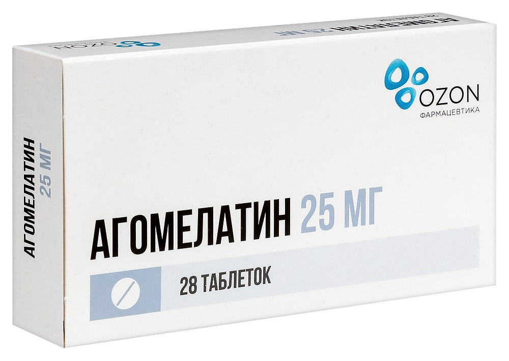

Хандра — это состояние грусти, апатии и потери интереса к жизни. Оно может быть вызвано сменой сезонов, стрессом или эмоциональным истощением.
"Недуг, которого причину
Давно бы отыскать пора,
Подобный английскому сплину,
Короче, русская хандра
Им овладела понемногу;
Он застрелиться, слава богу.
Попробовать не захотел,
Но к жизни вовсе охладел"
"Онегин жил анахоретом:
В седьмом часу вставал он летом
И отправлялся налегке
К бегущей под горой реке;
Певцу Гюльнары подражая,
Сей Геллеспонт переплывал,
Потом свой кофе выпивал,
Плохой журнал перебирая,
И одевался..."
"Прогулки, чтенье, сон глубокой,
Лесная тень, журчанье струй,
Порой белянки черноокой
Младой и свежий поцелуй,
Узде послушный конь ретивый,
Обед довольно прихотливый,
Бутылка светлого вина,
Уединенье, тишина"
Агомелатин - препарат нового поколения. Его используют при сильных депрессивных расстройствах, высоких уровнях тревожности. Усиливает высвобождение дофамина и норадреналина, стимулирует мелатониновые рецепторы.
